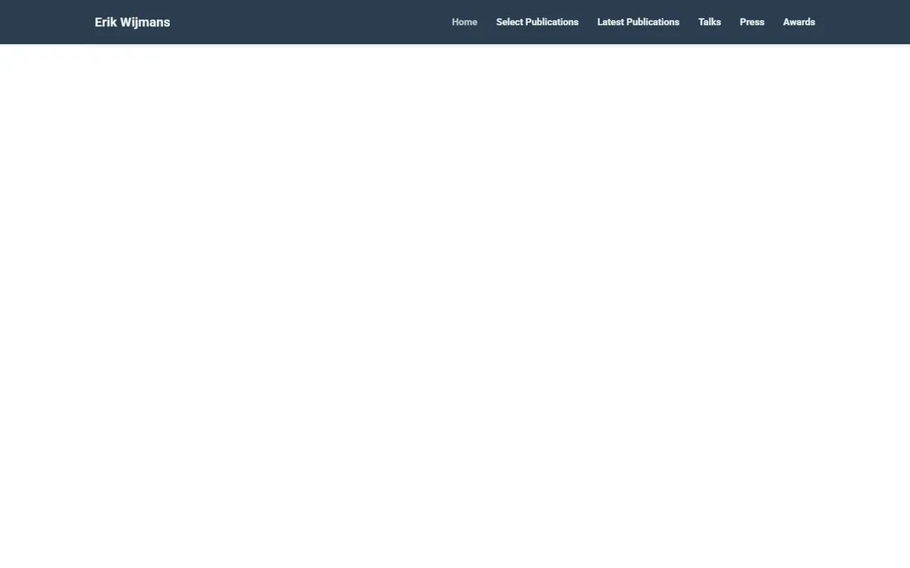

Erik Wijmans
A tidy research portfolio under a slate-navy bar: big airy Roboto headings, numbered research themes, and paper cards laid on alternating grey bands like files on a light table.

Checked against the rendered page. The 1440x900 shot was captured mid fade-in (0.3s intro animation), so its text looks paler; colors were taken from the settled full-page shot and computed styles.
Why it is here
Themed publication sections with large titles and right-aligned figure thumbnails on a soft grey band. Good structure.
Overview
Color Palette
Typography
Roboto
Erik Wijmans, embodied AI, navigation
Abstract · Method · Results · BibTeX — 0123456789
Font Awesome 4.7
Erik Wijmans, embodied AI, navigation
Abstract · Method · Results · BibTeX — 0123456789
Academicons
Erik Wijmans, embodied AI, navigation
Abstract · Method · Results · BibTeX — 0123456789
Spacing & Shape
Page Modules
Guidelines
More like this

Amir Bar
A clean faculty prospectus in Imperial blue: Inter on white, pill links, and paper cards that lift a few pixels when you reach for them.

Anagh Malik
The Barron table, warmed with apricot: Lato at 14px, blue links that flash orange, and the papers that matter sitting in a band of late-afternoon light.

Christoph Feichtenhofer
A conference-hall banner in Facebook blue, then a long ledger of papers in red ink, green venues and justified grey abstracts.

David B. Lindell
A lab notebook typeset by a careful editor: Source Serif prose, Source Sans labels, one clear blue, and every paper filed with its photograph.

David Novotny
A harbour at dusk beside a quiet reading room: a fixed teal-to-midnight panel with right-aligned contact lines, and soft grey text with tangerine links on white.

Jaeyeon Kim
A quiet seminar handout in light Roboto, where one red-highlighted question and a row of mint tags are the only raised voices.